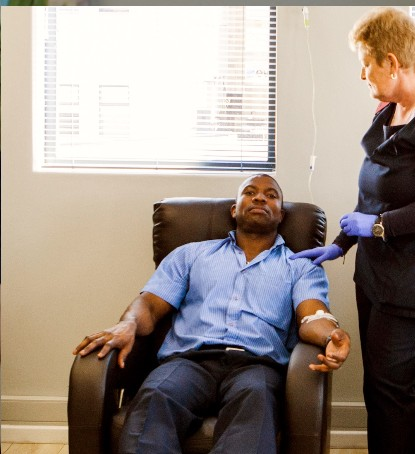
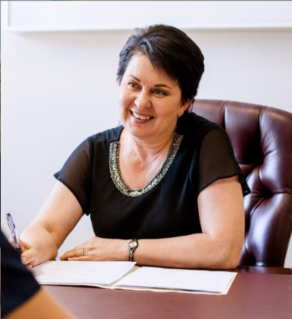

Your Health, Heard and Understood
Every journey at Health Synchrony begins with a conversation. Dr. van Dyk takes the time to understand you fully before recommending any treatment. Based in Centurion, Irene Security Estate.
The doctor will never ask for payment before a consultation
Meet Dr. van Dyk


A Personal Introduction from Dr. van Dyk
Dr. van Dyk will shortly share a personal video introduction covering her approach to consultations and patient care. In the meantime, please contact us with any questions you may have.
What to Expect at Your Consultation
Your first visit with Dr. van Dyk is a relaxed, one-on-one conversation about your health. There are no rushed decisions — just honest, attentive care focused entirely on you.
A typical consultation lasts between 30 and 45 minutes. During this time, Dr. van Dyk will review your medical history, discuss your current health concerns, and answer any questions you may have about our services or treatments. You are encouraged to share as much or as little as you feel comfortable with.
To prepare for your consultation, simply bring any relevant medical records or a list of current medications you are taking. There is no other special preparation required unless you have been advised otherwise. Comfortable clothing is recommended if a physical assessment has been planned as part of your visit.
Book Your Consultation
Book a ConsultationOur online booking is temporarily unavailable.
Call us: +27 XX XXX XXXX
Email: info@healthsynchrony.co.za
Go to Contact Us